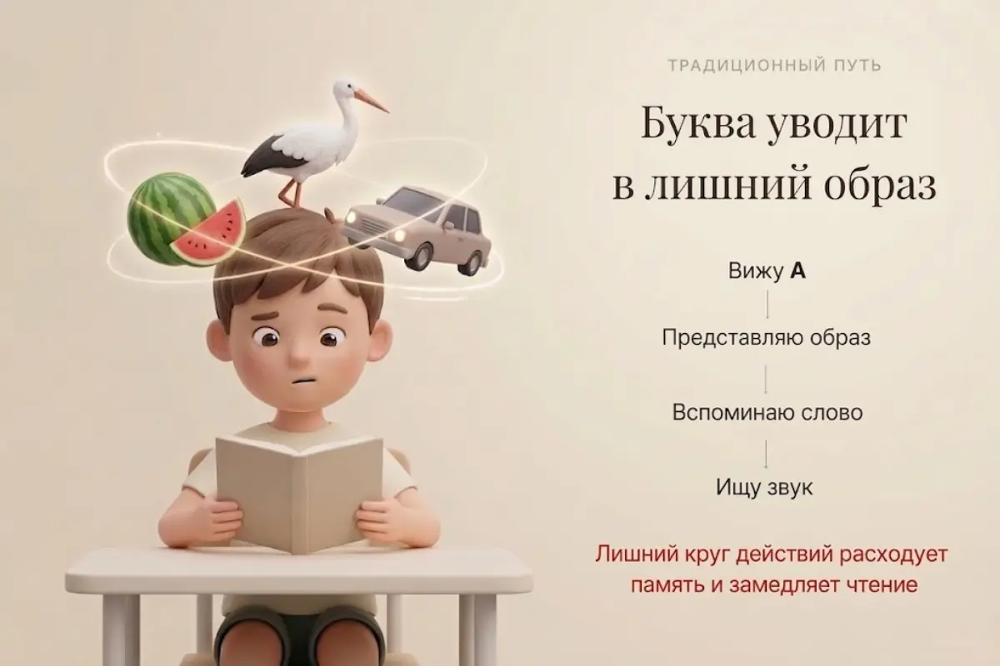
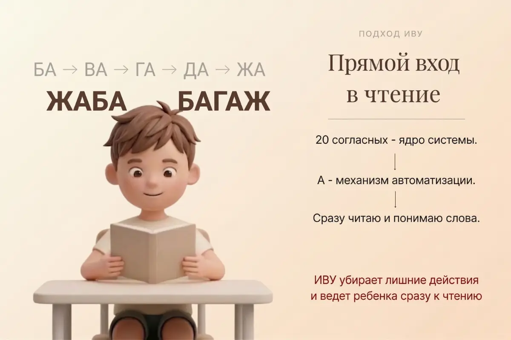

Если объёма мало
Чтение идёт с перегрузкой
- ребёнок держится за отдельные буквы и слова
- быстро теряет нить текста и начало фразы
- всё внимание уходит на расшифровку
- на понимание уже не остаётся ресурса
Дети 3–11 лет • чтение • память • мышление
Это фундамент мышления.
Инженерный код языка
20:10 в пользу России
20 согласных и 10 гласных — структура русского языка,
на которой построена система ИВУ.
Институт Врожденной Успеваемости — авторская система Сергея Белолипецкого, которая не просто учит складывать буквы в слоги, а формирует функциональное чтение, память и учебную устойчивость.
Ребёнок получает интеллектуальный запас прочности: чтение перестаёт быть тяжёлой обязанностью и становится естественным навыком, на котором строится вся дальнейшая учёба.
Главная контрольная точка:
к 6–7 годам ребёнок читает текст объёмом
100 слов за 3 минуты.
Выберите возраст ребёнка и получите понятный маршрут: для семьи, педагога или детского сада.
Чтение превращается в напряжение: ребёнок тянет слова по слогам, сбивается и теряет смысл ещё до того, как успевает понять текст.
Проблема не в ребёнке. Проблема в том, как его учат читать.
«Четверть населения страны не владеет функциональным чтением: ребёнок читает текст, но не понимает прочитанного».
Ольга Васильева, министр просвещения РФ, 2018
Когда обучение построено через лишние шаги и перегруз, навык формируется медленно, а смысл теряется слишком рано.
Ребёнок озвучивает слова, но не удерживает смысл текста как единое целое.
Всё внимание уходит на то, чтобы просто сложить слоги — на понимание уже не остаётся ресурса.
Когда чтение становится трудом, ребёнок начинает избегать книг и теряет уверенность.
«Чтение перестаёт быть усилием — и становится опорой для мышления, памяти и всей дальнейшей учёбы».
Ребёнок проходит текст спокойно и не останавливается на каждом слове.
Текст воспринимается как единое целое, а не как набор отдельных слов.
Чтение перестаёт быть тяжёлым усилием и входит в естественный ритм.
Память, понимание и речь начинают работать как единая система.
Не отдельные навыки, а связанная система, в которой ребёнок понимает, удерживает и уверенно двигается дальше.
Метод объёма работает как память в телефоне: чем больше объём — тем больше информации помещается.
Когда объём растёт — ребёнок начинает не просто читать, а думать.
Метод объёма — это не про скорость. Это про такой объём восприятия, при котором ребёнок может удерживать, понимать и связывать информацию без перегруза.
Лишние ассоциации перегружают память и замедляют прямой вход в чтение.


Чтение тормозит не ребёнок — его тормозят лишние действия в обучении.
Основа метода ИВУ — не заучивание букв, а опора на структурное ядро русского языка, не менявшееся более 1000 лет.
20:10
— формула языка
20 согласных образуют каркас,
10 гласных задают движение.
В ИВУ буква — это не образ, а сигнал автоматизации.
Эта структура удерживает каркас языка и даёт ребёнку устойчивую опору для чтения, письма и понимания.
Ребёнок опирается не на случайные образы, а на ясную систему языка — и входит в чтение без лишних промежуточных шагов.
Это не разовые занятия, а последовательный путь, который формирует базу для чтения, понимания и дальнейшего обучения.
Ребёнок сначала собирает слова из разрезных слогов на плоскости, а затем переходит к объёмному чтению на цветных кубиках. Всё происходит через игру, движение и интерес.
Как сделать кубики самимДошкольная аттестация «Правда важна». Ребёнок читает контрольный текст объёмом 100 слов за 3 минуты — это главный показатель того, что база чтения сформирована и ребёнок готов к школьной нагрузке.
Путь к 100 книгам лежит через объём: 400 диктантов, 400 устных и 400 письменных заданий закрепляют навык и переводят его в школьную устойчивость. Ребёнок учится писать, считать и понимать материал без перегрузки.
Выберите свой формат участия и перейдите к маршруту, который подходит именно вам.
Сначала вы выбираете формат, затем оставляете заявку и получаете маршрут именно под вашу задачу.
Родитель, педагог, детский сад или партнёр.
Укажите возраст ребёнка или опишите свою задачу.
Мы подберём формат доступа, материалы и следующий шаг.
Клуб Кручучу, задания и игровые входы в систему доступны сразу и без оплаты.
Базовое знакомство с системой и первые шаги можно начать без оплаты.
Методкабинет, сценарии занятий, диктанты и сопровождение подключаются после заявки.
Вы можете поддержать проект — это помогает развивать и распространять метод.
Подберём формат внедрения и взаимодействия под школу, проект или платформу.
Это не набор материалов.
Это выстроенная система, где всё работает как единый механизм обучения.
Здесь ребёнок не заучивает,
а взаимодействует.
Через движение и форму он удерживает структуру слова,
и чтение становится естественным процессом.
НОУ-ХАУ Азбука и НОУ-ХАУ Букварь работают как единая связка, где один и тот же материал осваивается на разной глубине.
Это редкий случай, когда один автор выстроил одновременно и Азбуку, и Букварь как параллельную систему входа в чтение. Ребёнок не застревает на трудном месте, а проходит материал через более мягкий и более сложный уровень.
При их параллельном использовании дети осваивают чтение
на 1–2 года раньше общепринятых сроков.
BabyStudent — это знак,
что ребёнок действительно умеет читать,
понимает текст и справляется с нагрузкой.
Такой результат показывает, что навык действительно сформирован и на него можно опираться дальше.
Коротко отвечаем на то, что обычно волнует перед началом.